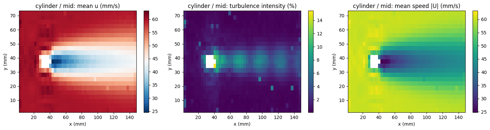
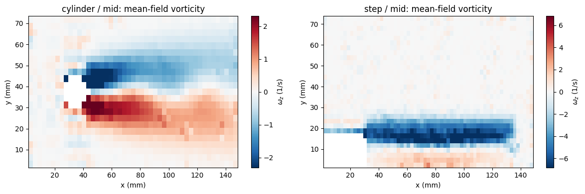
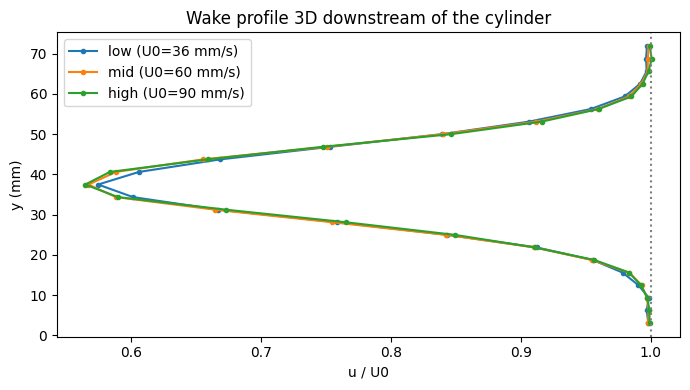
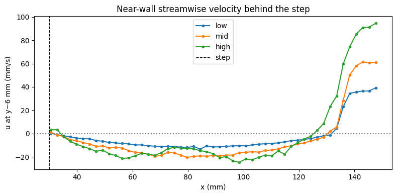
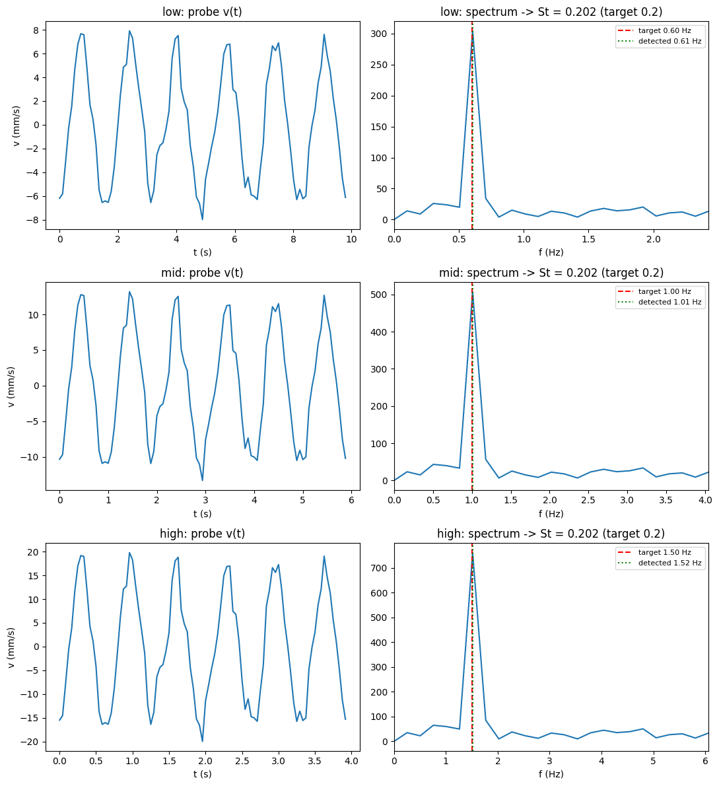
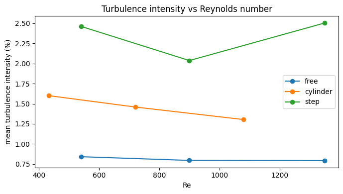

import pathlib
import numpy as np
import matplotlib.pyplot as plt
import sys
sys.path.insert(0, '.')
from synthetic_piv import (
FLOWS, REGIMES, CYL_X_MM, CYL_Y_MM, CYL_D_MM,
STEP_X_MM, STEP_H_MM, STEP_LR_MM, ST_TARGET,
reynolds_number, shedding_frequency,
)
RESULTS_ROOT = pathlib.Path('results')
# 🔁 Must mirror notebook 5 exactly: §1 DATA_SOURCE, §4 mask geometry,
# §1/§6 DT_FRAME_REAL.
DATA_SOURCE = "synthetic" # "synthetic" or "real"
CYL_GEOM_REAL = dict(cx_mm=35.0, cy_mm=None, d_mm=12.0) # 🔁 match notebook 5 §4
STEP_GEOM_REAL = dict(x_mm=30.0, h_mm=15.0, lr_mm=None) # 🔁 match notebook 5 §4 (lr_mm: design/expected value if you have one, else leave None)
DT_FRAME_REAL = {"low": None, "mid": None, "high": None} # 🔁 match notebook 5 §1
if DATA_SOURCE == "synthetic":
CYL_X, CYL_Y, CYL_D = CYL_X_MM, CYL_Y_MM, CYL_D_MM
STEP_X, STEP_H, STEP_LR = STEP_X_MM, STEP_H_MM, STEP_LR_MM
else:
CYL_X, CYL_Y, CYL_D = CYL_GEOM_REAL['cx_mm'], CYL_GEOM_REAL['cy_mm'], CYL_GEOM_REAL['d_mm']
STEP_X, STEP_H, STEP_LR = STEP_GEOM_REAL['x_mm'], STEP_GEOM_REAL['h_mm'], STEP_GEOM_REAL['lr_mm']
%matplotlib inline6 Analysis
This notebook turns the validated velocity fields under results/<flow>/<regime>/ into the kind of analysis expected for the assignment — mean/fluctuating fields, vorticity, wake diagnostics, vortex-shedding frequency, and comparisons across regimes and flows.
About the examples shown below. Switch to your own images — this notebook only reads whatever
results/folder it produced, whatever images it came from.
6.1 1. Loading a batch into 2D fields
Each field_A####.txt file has columns x, y, u, v, flags, mask (see Chapter 3). We reshape each realization onto its (regular) grid and stack them so we can compute statistics across realizations at every grid point. Points that fall inside the static mask (mask == 1, e.g. inside the cylinder or the step) are set to NaN so they do not pollute the statistics.
DEFAULT_WINDOWSIZES = (64, 32, 16)
WINDOWSIZES = {"step": (48, 24, 12)}
def batch_folder(flow, regime):
final_window = WINDOWSIZES.get(flow, DEFAULT_WINDOWSIZES)[-1]
return RESULTS_ROOT / flow / regime / f'OpenPIV_results_{final_window}_batch'
def load_batch(flow, regime):
"""Returns (X, Y, U, V), or None if this case hasn't been processed yet."""
folder = batch_folder(flow, regime)
files = sorted(folder.glob('field_A*.txt'))
if not files:
return None
Us, Vs = [], []
x = y = None
for f in files:
data = np.loadtxt(f, skiprows=1)
xf, yf, u, v, flags, mask = data.T
if x is None:
x, y = xf, yf
u = np.where(mask > 0, np.nan, u)
v = np.where(mask > 0, np.nan, v)
Us.append(u)
Vs.append(v)
xi, yi = np.unique(x), np.unique(y)
shape = (len(yi), len(xi))
U = np.stack(Us).reshape(-1, *shape) # (n_realizations, ny, nx)
V = np.stack(Vs).reshape(-1, *shape)
X, Y = np.meshgrid(xi, yi)
return X, Y, U, V
def mean_std(U, V):
import warnings
with warnings.catch_warnings():
warnings.simplefilter('ignore', category=RuntimeWarning)
with np.errstate(invalid='ignore'):
Umean, Vmean = np.nanmean(U, axis=0), np.nanmean(V, axis=0)
Ustd, Vstd = np.nanstd(U, axis=0), np.nanstd(V, axis=0)
speed_mean = np.sqrt(Umean**2 + Vmean**2)
tke_like = 0.5 * (Ustd**2 + Vstd**2) # ~ turbulent kinetic energy (per unit mass)
return Umean, Vmean, Ustd, Vstd, speed_mean, tke_like
def first_available_case():
"""First (flow, regime) with processed data, used as a demo case if
('cylinder', 'mid') itself isn't ready yet."""
for flow in FLOWS:
for regime in REGIMES:
if load_batch(flow, regime) is not None:
return flow, regime
return Nonedemo_case = ('cylinder', 'mid') if load_batch('cylinder', 'mid') is not None else first_available_case()
if demo_case is None:
print("No processed case found yet -- run notebook 5 first, or wait for mutualized data.")
else:
demo_flow, demo_regime = demo_case
if demo_case != ('cylinder', 'mid'):
print(f"('cylinder', 'mid') not available yet -- using {demo_flow}/{demo_regime} instead.")
X, Y, U, V = load_batch(demo_flow, demo_regime)
Umean, Vmean, Ustd, Vstd, speed_mean, tke_like = mean_std(U, V)
U0 = 60.0 * REGIMES[demo_regime]
turbulence_intensity = np.sqrt(2/3 * tke_like) / U0 # normalized by U0
fig, axs = plt.subplots(1, 3, figsize=(15, 4))
for ax, field, title, cmap in [
(axs[0], Umean, 'mean u (mm/s)', 'RdBu_r'),
(axs[1], turbulence_intensity*100, 'turbulence intensity (%)', 'viridis'),
(axs[2], speed_mean, 'mean speed |U| (mm/s)', 'viridis'),
]:
pc = ax.pcolormesh(X, Y, field, shading='auto', cmap=cmap)
plt.colorbar(pc, ax=ax)
ax.set_title(f'{demo_flow} / {demo_regime}: {title}')
ax.set_xlabel('x (mm)'); ax.set_ylabel('y (mm)')
plt.tight_layout()
plt.show()
Notice the turbulence intensity peaking exactly on the flanks of the mean wake deficit — the signature of shear-driven fluctuations (here, mostly the sampling of different shedding phases across realizations) rather than measurement noise.
6.2 2. Vorticity
The out-of-plane vorticity \(\omega_z = \partial v/\partial x - \partial
u/\partial y\) is computed from the mean field with a simple centered finite difference (numpy.gradient), exactly the kind of derived quantity requested in a PIV lab report.
def vorticity(X, Y, U, V):
dx = X[0, 1] - X[0, 0]
dy = Y[1, 0] - Y[0, 0]
dVdx = np.gradient(V, dx, axis=1)
dUdy = np.gradient(U, dy, axis=0)
return dVdx - dUdy
to_plot = [flow for flow in ['cylinder', 'step'] if load_batch(flow, 'mid') is not None]
if not to_plot:
print("Neither cylinder/mid nor step/mid is available yet.")
else:
fig, axs = plt.subplots(1, len(to_plot), figsize=(6 * len(to_plot), 4), squeeze=False)
for ax, flow in zip(axs[0], to_plot):
Xf, Yf, Uf, Vf = load_batch(flow, 'mid')
Um, Vm, *_ = mean_std(Uf, Vf)
wz = vorticity(Xf, Yf, Um, Vm)
vmax = np.nanpercentile(np.abs(wz), 98)
pc = ax.pcolormesh(Xf, Yf, wz, shading='auto', cmap='RdBu_r',
vmin=-vmax, vmax=vmax)
plt.colorbar(pc, ax=ax, label='$\\omega_z$ (1/s)')
ax.set_title(f'{flow} / mid: mean-field vorticity')
ax.set_xlabel('x (mm)'); ax.set_ylabel('y (mm)')
plt.tight_layout()
plt.show()
6.3 3. Case-specific diagnostics
3.1 Cylinder: wake velocity-deficit profile
We extract a cross-stream profile of the mean streamwise velocity a few diameters downstream and read off the deficit relative to the free-stream value — a standard way to characterize a wake.
fig, ax = plt.subplots(figsize=(7, 4))
for regime in REGIMES:
batch = load_batch('cylinder', regime)
if batch is None:
print(f"cylinder / {regime}: not processed yet -- skipping")
continue
Xc, Yc, Uc, Vc = batch
Um, *_ = mean_std(Uc, Vc)
x_probe = CYL_X + 3 * CYL_D
icol = np.argmin(np.abs(Xc[0, :] - x_probe))
profile = Um[:, icol]
y_profile = Yc[:, icol]
U0 = 60.0 * REGIMES[regime]
ax.plot(profile / U0, y_profile, marker='o', ms=3, label=f'{regime} (U0={U0:.0f} mm/s)')
deficit = 1 - np.nanmin(profile) / U0
print(f"cylinder / {regime}: deficit at x=3D -> {deficit*100:.1f} % of U0")
ax.axvline(1.0, color='gray', ls=':')
ax.set_xlabel('u / U0'); ax.set_ylabel('y (mm)')
ax.set_title('Wake profile 3D downstream of the cylinder')
ax.legend()
plt.tight_layout()
plt.show()cylinder / low: deficit at x=3D -> 42.5 % of U0
cylinder / mid: deficit at x=3D -> 43.3 % of U0
cylinder / high: deficit at x=3D -> 43.5 % of U0
3.2 Step: recirculation length
Along a row close to the wall, the recirculation bubble shows up as negative mean streamwise velocity; the reattachment point is where it crosses back to positive. We compare the estimate to the length used to generate the synthetic data (STEP_LR_MM) — a validation you will not be able to do on real data, but which confirms the method is sound before you trust it there.
fig, ax = plt.subplots(figsize=(8, 4))
for regime in REGIMES:
batch = load_batch('step', regime)
if batch is None:
print(f"step / {regime}: not processed yet -- skipping")
continue
Xs, Ys, Us, Vs = batch
Um, *_ = mean_std(Us, Vs)
irow = np.argmin(np.abs(Ys[:, 0] - 0.4 * STEP_H)) # a row inside the bubble
u_wall = Um[irow, :]
x_wall = Xs[irow, :]
ax.plot(x_wall, u_wall, marker='.', label=regime)
downstream = x_wall > STEP_X
sign_change = np.where(np.diff(np.sign(u_wall[downstream])) > 0)[0]
if len(sign_change):
x_reattach = x_wall[downstream][sign_change[0]]
design_str = f", design value = {STEP_LR:.0f} mm" if STEP_LR is not None else ""
print(f"step / {regime}: estimated reattachment x ~= {x_reattach:.0f} mm "
f"(Lr ~= {x_reattach - STEP_X:.0f} mm{design_str})")
else:
print(f"step / {regime}: no reattachment point found -- the near-wall "
f"recirculation was not resolved (see the invalid-vector "
f"fraction for this case in notebook 5, section 7)")
ax.axhline(0, color='gray', ls=':')
ax.axvline(STEP_X, color='k', ls='--', lw=1, label='step')
ax.set_xlabel('x (mm)'); ax.set_ylabel(f'u at y~{0.4*STEP_H:.0f} mm (mm/s)')
ax.set_title('Near-wall streamwise velocity behind the step')
ax.legend()
plt.tight_layout()
plt.show()step / low: estimated reattachment x ~= 131 mm (Lr ~= 101 mm, design value = 105 mm)
step / mid: estimated reattachment x ~= 129 mm (Lr ~= 99 mm, design value = 105 mm)
step / high: estimated reattachment x ~= 124 mm (Lr ~= 94 mm, design value = 105 mm)
The
step/highregime originally failed to resolve the recirculation at all (no sign crossing found): heavier reversed-flow gradients and more invalid vectors near the wall (see notebook 5, §7) let the outlier-replacement/smoothing step bias the near-wall velocity back towards the free-stream value instead of preserving the reversal. Notebook 5, §5 now uses a finer final interrogation window for thestepflow specifically (48→24→12 px instead of the default 64→32→16 px) to better resolve the thin near-wall shear layer, and the recirculation is recovered at every regime — but note the measured length below is still comparatively less accurate athighthan atlow/mid, and §7’s invalid-vector fraction is higher everywhere forstepas a result of the finer window. Window-size choice near sharp gradients is a real resolution/noise trade-off, not just a knob to turn up universally.
6.4 4. Vortex shedding & Strouhal number
We probe the transverse velocity a few diameters downstream, look at its spectrum, and convert the dominant frequency into a Strouhal number \(St = f_{shed} D / U_0\).
def strouhal_from_timeresolved(regime):
folder = RESULTS_ROOT / 'cylinder' / regime / 'OpenPIV_results_16_timeresolved'
files = sorted(folder.glob('field_A*.txt'))
if not files:
return None
x0 = y0 = None
vt = []
for f in files:
data = np.loadtxt(f, skiprows=1)
x, y, u, v, flags, mask = data.T
if x0 is None:
x0, y0 = x, y
target_x = CYL_X + 3 * CYL_D
target_y = CYL_Y if CYL_Y is not None else y0.mean()
idx = np.argmin((x0 - target_x)**2 + (y0 - target_y)**2)
vt.append(v[idx])
vt = np.array(vt)
if DATA_SOURCE == "synthetic":
# dt_frame used during acquisition: recovered from shedding_frequency()
# the same way notebook 5 built it (6 periods x 16 samples/period)
f_target = shedding_frequency(regime)
dt_frame = (1.0 / f_target) / 16
else:
f_target = None # 🔁 unknown for real data -- that's what we're measuring
dt_frame = DT_FRAME_REAL[regime]
if dt_frame is None:
raise ValueError(f"DT_FRAME_REAL['{regime}'] is not set -- match notebook 5 §1.")
vt_detrend = vt - vt.mean()
freqs = np.fft.rfftfreq(len(vt_detrend), d=dt_frame)
spec = np.abs(np.fft.rfft(vt_detrend))
f_peak = freqs[1:][np.argmax(spec[1:])]
return vt, dt_frame, freqs, spec, f_peak, f_target
available_regimes = [r for r in REGIMES if strouhal_from_timeresolved(r) is not None]
if not available_regimes:
print("No time-resolved cylinder sequence processed yet -- run notebook 5 §6 first.")
else:
fig, axs = plt.subplots(len(available_regimes), 2, figsize=(11, 4 * len(available_regimes)), squeeze=False)
St_values = {}
for i, regime in enumerate(available_regimes):
vt, dt_frame, freqs, spec, f_peak, f_target = strouhal_from_timeresolved(regime)
t = np.arange(len(vt)) * dt_frame
U0 = 60.0 * REGIMES[regime]
St = f_peak * CYL_D / U0
St_values[regime] = St
axs[i, 0].plot(t, vt)
axs[i, 0].set_title(f'{regime}: probe v(t)')
axs[i, 0].set_xlabel('t (s)'); axs[i, 0].set_ylabel('v (mm/s)')
axs[i, 1].plot(freqs, spec)
if f_target is not None:
axs[i, 1].axvline(f_target, color='r', ls='--', label=f'target {f_target:.2f} Hz')
axs[i, 1].axvline(f_peak, color='g', ls=':', label=f'detected {f_peak:.2f} Hz')
axs[i, 1].set_xlim(0, max(4 * f_peak, 4 * (f_target or f_peak)))
st_target_str = f" (target {ST_TARGET})" if DATA_SOURCE == "synthetic" else ""
axs[i, 1].set_title(f'{regime}: spectrum -> St = {St:.3f}{st_target_str}')
axs[i, 1].set_xlabel('f (Hz)')
axs[i, 1].legend(fontsize=8)
plt.tight_layout()
plt.show()
print(f"\n{'regime':6s} {'St (measured)':>15s}" + (" St (target)" if DATA_SOURCE == "synthetic" else ""))
for regime, St in St_values.items():
line = f"{regime:6s} {St:15.3f}"
if DATA_SOURCE == "synthetic":
line += f" {ST_TARGET:13.3f}"
print(line)
regime St (measured) St (target)
low 0.202 0.200
mid 0.202 0.200
high 0.202 0.200The Strouhal number comes out close to the design value at every regime — the classic experimental observation that, over a wide range of moderate Reynolds numbers, \(St\) stays close to \(0.2\) for a circular cylinder. On real data, expect more scatter (finite sampling, 3D effects, background turbulence) and use this as a sanity check on your probe location and window length rather than an exact target.
6.5 5. Regime & flow comparison
Bringing the pieces together: Reynolds number, wake deficit and turbulence intensity across the three flows and three regimes.
rows = []
for flow in FLOWS:
for regime in REGIMES:
batch = load_batch(flow, regime)
if batch is None:
print(f"{flow} / {regime}: not processed yet -- skipping")
continue
Xc, Yc, Uc, Vc = batch
Um, Vm, Us, Vsd, speed_m, tke = mean_std(Uc, Vc)
U0 = 60.0 * REGIMES[regime]
TI = float(np.nanmean(np.sqrt(2/3 * tke)) / U0)
Re = reynolds_number(flow, regime)
rows.append((flow, regime, U0, Re, TI))
if not rows:
print("No processed cases found yet -- run notebook 5 first.")
else:
print(f"{'flow':10s} {'regime':6s} {'U0(mm/s)':>9s} {'Re':>7s} {'mean TI':>9s}")
for flow, regime, U0, Re, TI in rows:
print(f"{flow:10s} {regime:6s} {U0:9.1f} {Re:7.0f} {TI*100:8.1f}%")
fig, ax = plt.subplots(figsize=(7, 4))
for flow in FLOWS:
Re_vals = [r[3] for r in rows if r[0] == flow]
TI_vals = [r[4]*100 for r in rows if r[0] == flow]
if not Re_vals:
continue
ax.plot(Re_vals, TI_vals, marker='o', label=flow)
ax.set_xlabel('Re'); ax.set_ylabel('mean turbulence intensity (%)')
ax.set_title('Turbulence intensity vs Reynolds number')
ax.legend()
plt.tight_layout()
plt.show()flow regime U0(mm/s) Re mean TI
free low 36.0 540 0.8%
free mid 60.0 900 0.8%
free high 90.0 1350 0.8%
cylinder low 36.0 432 1.6%
cylinder mid 60.0 720 1.5%
cylinder high 90.0 1080 1.3%
step low 36.0 540 2.5%
step mid 60.0 900 2.0%
step high 90.0 1350 2.5%
6.6 6. Discussion — for your report
- How does the wake deficit and the recirculation length change with regime? Is that consistent with your expectation for increasing Reynolds number?
- The turbulence intensity estimate mixes true unsteadiness with the realization-to-realization sampling of different shedding phases — how would you separate the two on time-resolved data instead of independent realizations?
- The Strouhal number was essentially constant across regimes here — is that still true on your real data? What would make it vary (blockage ratio, free-surface effects, 3D end effects in the aquarium)?
- Compare the three flows at the same regime: how does the free-stream case help you separate “true” flow features from PIV processing artifacts (window size, validation thresholds) in the cylinder and step cases?
- Revisit the image-quality diagnostics: for your real images, do particle density/size vary across flows or regimes to bias these comparisons?